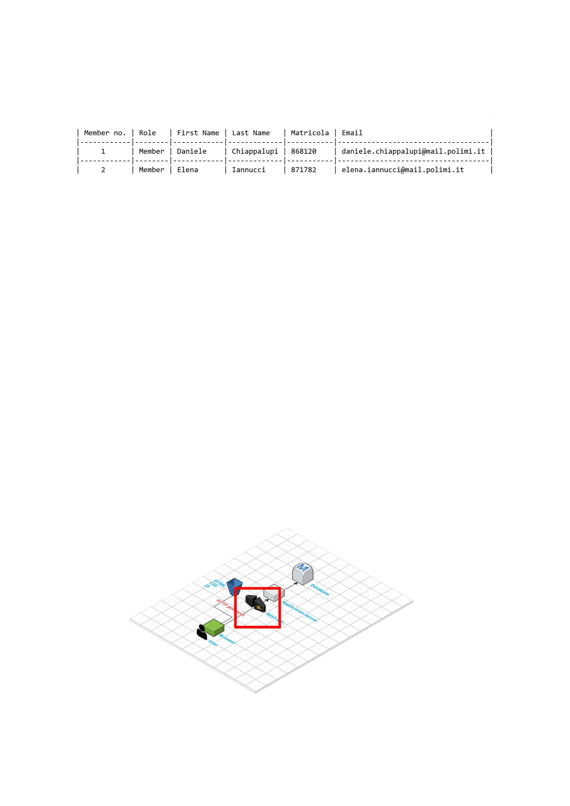
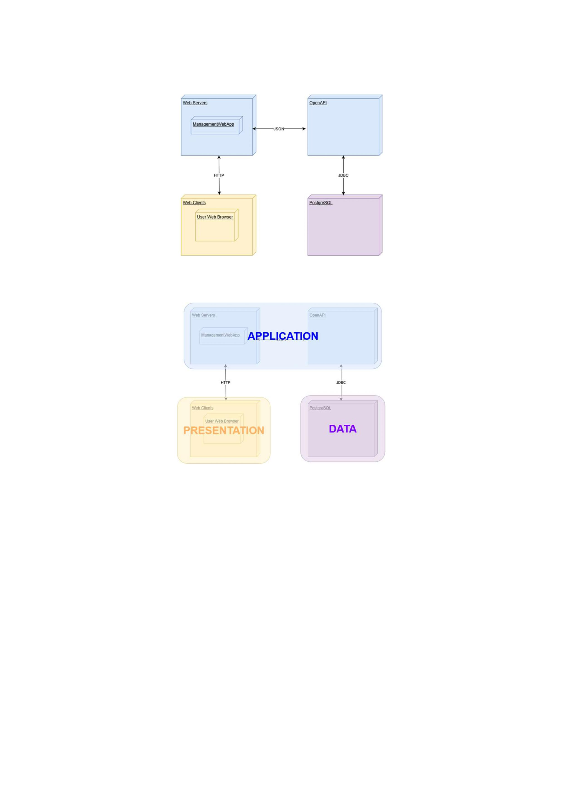
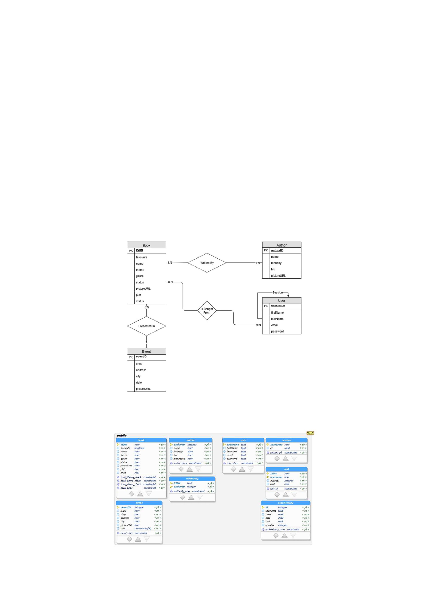

Documentation of the Backend part
Deliverable D1
General group information
Links to other deliverables
- Deliverable D0: the web application is accessible at:
- Deliverable D2: the YAML or JSON file containing the specification of the app:
- Deliverable D3: the SwaggerUI page of the same API is available at:
- Deliverable D4: the source code of D0 is available as a zip file at:
- Deliverable D5: the address of the online source control repository is available at:
We hereby declare that this is a private repository and, upon request, we will give access to the
instructors.
Specification
Web Architecture
Describe here, with a diagram, the components of your web application and how they interact. Highlight which
parts belong to the application layer, data layer or presentation layer. How did you ensure that HTML is not
rendered server side?
I took this slide directly from the Professor Zaccaria slides, as it is exactly the way we deployed our
application. The database is, obviously, the data layer, while the Application server serves as application

layer. The database is the one managed through Heroku, while the Application Server is the one
generated from the swaggerUI. In a basic representation:
Which means that the level are:
API: REST compliance
Describe here to what extent did you follow REST principles and what are the reasons for which you might have
decided to diverge. Note, you must not describe the whole API here, just the design decisions.
We'll describe our approach to REST principles by targeting their main points, explaining if and why we
followed those principles.
- Uniform Interface: this is fundamental to the REST Api design and we did our best to follow this
principle. Our interface is resource based, the client has enough information to customize or delete the
resources where he has the permissions just from their r3presentation, the messages are self descriptive,
and we use HATEOAS (Hypermedia as the Engine of Application State).
- Client-Server: the client application and server application are totally able to evolve separately without
any dependency on each other.
- Stateless: we obviously could not make our application stateless, as session management was
requested. However, after a user logs in, each request from the client contain all the information
necessary to service the request, including authentication and authorization details: we used a light
session management that is not invasive and preserve the REST Api foundamentals.

- Layered System: the system is layered, as the server is deployed in a place other than the one where the
postgres server is. Session information are stored in the server.
- Code on demand: we are actually always sending the static representations of our resources in the form
of JSON, so this point is not relevant.
OpenAPI Resource models
Describe here synthetically, which models you have introduced for resources.
We kept everything simple, in order to have a more understendable model: the most part of our resources
are described with key-value strings. Sometimes, boolean flags were used to give to the resources some
kind of property. Even dates and urls are saved throught strings. Most of the tables in the database store a
unique identifier for every row, such as the ISBN for the books or an incrementing ID for the authors.
Data model
Describe with an ER diagram the model used in the data layer of your web application. How these maps connects
to the OpenAPI data model?
Here is the ER diagram of the model:
And here is the image of the mapped tables in the data model:
Implementation
Tools used
Describe here which tools, languages and frameworks did you use for the backend of the application.
To develop the back end application, we used:
- nodejs and connectjs;
- postgreSQL to manage the database;
- Swagger (OpenAPI) to generate and manage the server and the specification;
Discussion
How did you make sure your web application adheres to the provided OpenAPI specification?
We actually started from the OpenAPI specification to build the project, and during the process of
building the web application, we changed and manipulated the specification in order to keep it updated
and coherent with the state of our project. Almost every API operation is used from the front end side,
and if not, either the operation can be used to add data to the database or to supply data to other
operations. Moreover, those few operations that aren't used from the front-end side could be used to
expand the application anytime.
Why do you think your web application adheres to common practices to partition the web application (static
assets vs. application data)?
We think that our web application adheres to common practices to partition the web application because
we effectively separated the static resources, such as html, css and js files putting them on the server,
from the data, that are stored in a remote database and that are reached through specific calls. As we
learnt, to find the right balance between Static Content and Dynamic Content is a constant debate, but we
are confident that our solution is reliable, stable and scalable.
Describe synthetically why and how did you manage session state, what are the state change triggering actions
(e.g., POST to login etc..).
For the session state, we only used cookie-session and cookie-parser, as recommended during the
lectures. Basically, everytime that a new agent connects to the site, a new session and session ID is
generated for him. As soon as the client registers (through /user/register POST) or logins (/user/login
POST) successfully, session.loggedin is setted to true and a couple session.id-username is created in the
database (or updated, if another one was already there). Later on, every time that an action that needs
the authentication is performed from the client, the server checks if the session.loggedin is true. If so, he
looks in the database for the username corresponding to the session id, and perform any action related to
him.
Which technology did you use (relational or a no-SQL database) for managing the data model?
We used PostgreSQL for managing the data model, which refers to a relational technology.
Task assignment
The work has been fairly subdivided between us:
- Daniele Chiappalupi worked on front end (25% of the time) and on the back end (75% of the time).
- Elena Iannucci worked on front end (75% of the time) and on the back end (25% of the time).
Also the documentation of both the parts has been written equally.
Analysis of existing API
Describe here if you have found relevant APIs that have inspired the OpenAPI specification and why (at least
two).
As this was the first API specification that we have ever wrote, we have attended a lot of different
sources. However, the ones that were most useful were the PetStore API sample of Swagger (which we
used as a sort of skeleton) and the one generated in the class from Professor Zaccaria. As those have
been both useful, we also took inspiration from several code snippet and online question/answers to
develop our application. Sites such as StackOverflow have been extremely useful.
Learning outcome
What was the most important thing all the members have learned while developing this part of the project, what
questions remained unanswered, how you will use what you've learned in your everyday life?
- Daniele Chiappalupi has become highly confident with javascript: he never had experienced it before
and he is satisfied to have broaden his skills. Moreover, he learnt to write in HTML and CSS, and has
improved his version commit system knowledge. Overall, he is happy for what he has learned: developing
and managing a web database is a skill that will help him in his future.
- Elena Iannucci has mastered the skills of front end developing and learned the basic functioning of
database management from js. She is truly happy about what she has learnt: design, web and front end
developing has always been a passion of her, and she is utterly satisfied that she had the possibility to
learn them in a University course.